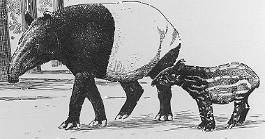

O Mundo e as sombras na parede da caverna
Platão
- E agora - disse eu - compara com a seguinte situação o estado de nossa alma com respeito à educação ou à falta desta. Imagina uma caverna subterrânea provida de uma vasta entrada aberta para a luz e que se estende ao largo de toda a caverna, e uns homens que lá dentro se acham desde meninos, amarrados pelas pernas e pelo pescoço de tal maneira que tenham de permanecer imóveis e olhar tão-só para a frente, pois as amarras não lhes permitem voltar a cabeça; atrás deles e num plano superior, arde um fogo a certa distância, e entre o fogo e os encadeados, há um caminho elevado, ao longo do qual faze de conta que tenha sido construído um pequeno muro semelhante ao tapume que os exibidores de marionetes colocam entre les e o público acima do qual manobram as marionetes e apresentam o espetáculo.
- Vejo daqui a cena - disse Glauco.

- E não vês também homens a passar ao longo desse pequeno muro, carregando toda espécie de objetos, cuja altura ultrapassa a da parede, e estátuas e figuras de animais feitas de pedra, de madeira e outros materiais variados? Alguns desses carregadores conversam entre si, outros marcham em silêncio.
- Que estranha situação descreves, e que estranhos prisioneiros!
- Eles são semelhantes a nós - disse eu. - Em primeiro lugar, crês que os que estão assim tenham visto outra coisa de si mesmos, ou de seus companheiros, senão as somgras projetadas pelo fogo sobre a parede fronteira da caverna?
 - Como seria possível, se durante toda a sua vida foram obrigados a manter imóveis as cabeças?
- E dos objetos transportados, não veriam igualmente apenas as sombras?
- Sim.
- E se pudessem falar uns com os outros, não julgariam estar se referindo ao que passava diante deles?
- Forçosamente.
- E se, além disso, houvesse um eco vindo da parede diante deles? Cada vez que um dos passantes falasse, não creriam eles que quem falava era a sombra que viam passar?
- É indubitável.
- Para eles, pois - disse eu - a verdade, literalmente, nada mais seria do que as sombras dos objetos fabricados.
- Como seria possível, se durante toda a sua vida foram obrigados a manter imóveis as cabeças?
- E dos objetos transportados, não veriam igualmente apenas as sombras?
- Sim.
- E se pudessem falar uns com os outros, não julgariam estar se referindo ao que passava diante deles?
- Forçosamente.
- E se, além disso, houvesse um eco vindo da parede diante deles? Cada vez que um dos passantes falasse, não creriam eles que quem falava era a sombra que viam passar?
- É indubitável.
- Para eles, pois - disse eu - a verdade, literalmente, nada mais seria do que as sombras dos objetos fabricados.
Platão (428-348 a.C), "A República: Livro VIII, 514a-c"